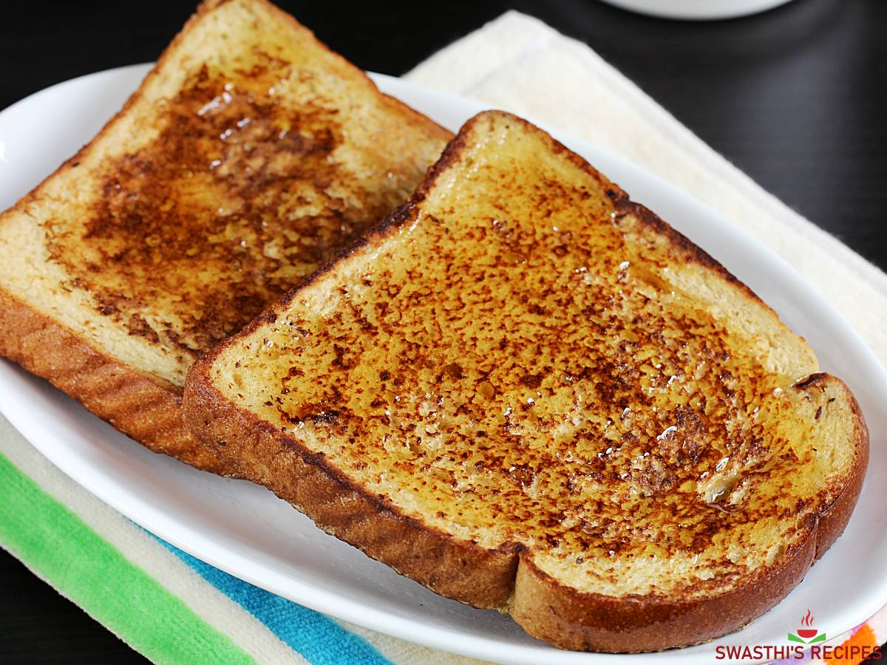

Toast Recipe

Below are the ingredients you need to prepare a toast
- 1 egg
- 1 teaspoon vanilla extract
- 1/2 teaspoon cinnamon
- 1/4 cup milk
- 4 slices bread
once you have prepared these ingredients, we move on to the steps to prepare the toast.
- Beat egg, vanilla, cinnamon in shallow dish with wire whisk. Stir in milk.
- Dip bread iin egg mixture, turning to coat both sides evenly.
- Cook bread slices on lightly greased griddle
Toast is extremely easy to prepare so enjoy.
Back to top
Home page